Peso seco
Carga de datos y conversión de variables
Gráfico de dispersión

Se ajusta el modelo
##
## Call:
## lm(formula = psf ~ pff, data = datospeso)
##
## Coefficients:
## (Intercept) pff
## 0.1749 0.1657Modelo
##
## Call:
## lm(formula = psf ~ pff, data = datospeso)
##
## Residuals:
## Min 1Q Median 3Q Max
## -2.68401 -0.26222 -0.07354 0.22012 2.85114
##
## Coefficients:
## Estimate Std. Error t value Pr(>|t|)
## (Intercept) 0.17491 0.03283 5.328 1.19e-07 ***
## pff 0.16571 0.00281 58.983 < 2e-16 ***
## ---
## Signif. codes: 0 '***' 0.001 '**' 0.01 '*' 0.05 '.' 0.1 ' ' 1
##
## Residual standard error: 0.6162 on 1164 degrees of freedom
## Multiple R-squared: 0.7493, Adjusted R-squared: 0.7491
## F-statistic: 3479 on 1 and 1164 DF, p-value: < 2.2e-16Análisis univariado
Fenoles
Tabla descriptiva por población
## # A tibble: 2 × 6
## site n Mean min max sd
## <fct> <int> <dbl> <dbl> <dbl> <dbl>
## 1 Concordia 64 522. 66.1 1666. 439.
## 2 Gualeguaychu 38 198. 79.7 485. 106.Gráfico por población
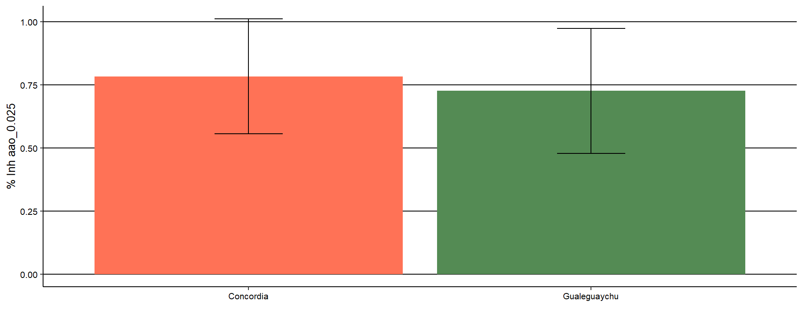
Tabla descriptiva por fenotipo
## # A tibble: 27 × 7
## # Groups: site [2]
## site phenotype n Mean min max sd
## <fct> <fct> <int> <dbl> <dbl> <dbl> <dbl>
## 1 Concordia 154 4 513. 464. 557. 41.6
## 2 Concordia 156 4 326. 315. 339. 10.1
## 3 Concordia 161 4 200. 144. 246. 45.2
## 4 Concordia 171 4 159. 111. 242. 57.2
## 5 Concordia 174 3 301. 278. 335. 29.6
## 6 Concordia 175 4 1495. 1357. 1666. 143.
## 7 Concordia 178 4 1328. 1245. 1518. 127.
## 8 Concordia 185 4 765. 613. 871. 113.
## 9 Concordia 190 4 241. 182. 314. 54.3
## 10 Concordia 193 4 269. 208. 316. 45.7
## # ℹ 17 more rowsGráficos por fenotipo
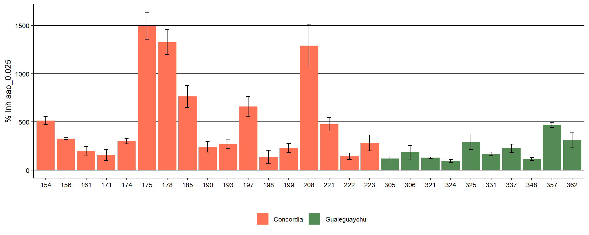
AAO
0.025
####Tabla descriptiva por población
## # A tibble: 2 × 6
## site n Mean min max sd
## <fct> <int> <dbl> <dbl> <dbl> <dbl>
## 1 Concordia 64 0.783 0.175 0.988 0.228
## 2 Gualeguaychu 38 0.726 0.195 0.971 0.247Gráfico por población

Tabla descriptiva por fenotipo
## # A tibble: 27 × 7
## # Groups: site [2]
## site phenotype n Mean min max sd
## <fct> <fct> <int> <dbl> <dbl> <dbl> <dbl>
## 1 Concordia 154 4 0.704 0.612 0.865 0.111
## 2 Concordia 156 4 0.879 0.562 0.988 0.211
## 3 Concordia 161 4 0.827 0.741 0.929 0.0772
## 4 Concordia 171 4 0.558 0.336 0.814 0.199
## 5 Concordia 174 3 0.452 0.369 0.542 0.0870
## 6 Concordia 175 4 0.948 0.947 0.951 0.00187
## 7 Concordia 178 4 0.951 0.950 0.953 0.00160
## 8 Concordia 185 4 0.958 0.956 0.959 0.00114
## 9 Concordia 190 4 0.874 0.761 0.953 0.0881
## 10 Concordia 193 4 0.905 0.845 0.959 0.0572
## # ℹ 17 more rowsGráficos por fenotipo
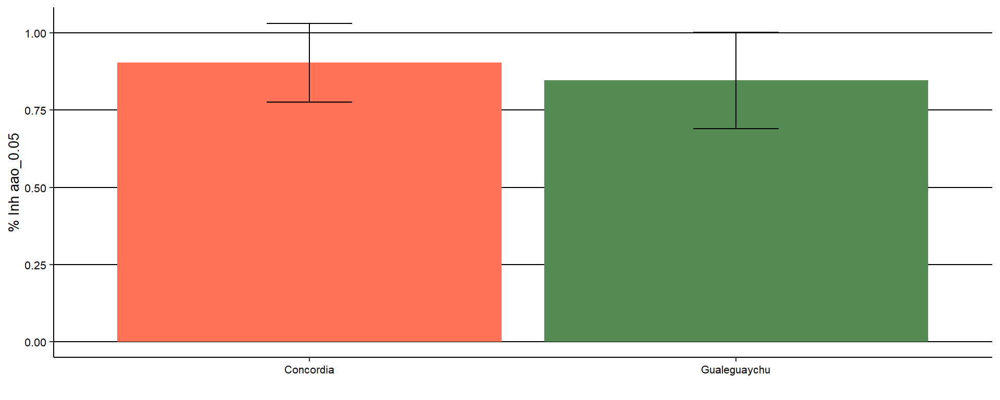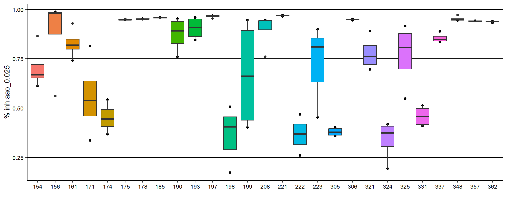
0.050
Tabla descriptiva por población
## # A tibble: 2 × 6
## site n Mean min max sd
## <fct> <int> <dbl> <dbl> <dbl> <dbl>
## 1 Concordia 63 0.903 0.342 0.977 0.128
## 2 Gualeguaychu 38 0.846 0.397 0.971 0.157Gráfico por población

Tabla descriptiva por fenotipo
## # A tibble: 27 × 7
## # Groups: site [2]
## site phenotype n Mean min max sd
## <fct> <fct> <int> <dbl> <dbl> <dbl> <dbl>
## 1 Concordia 154 4 0.950 0.947 0.954 0.00315
## 2 Concordia 156 4 0.914 0.749 0.977 0.111
## 3 Concordia 161 4 0.957 0.954 0.961 0.00312
## 4 Concordia 171 4 0.823 0.687 0.955 0.109
## 5 Concordia 174 3 0.747 0.681 0.855 0.0947
## 6 Concordia 175 4 0.954 0.952 0.956 0.00145
## 7 Concordia 178 4 0.970 0.969 0.971 0.000801
## 8 Concordia 185 3 0.967 0.965 0.968 0.00139
## 9 Concordia 190 4 0.949 0.912 0.963 0.0246
## 10 Concordia 193 4 0.961 0.960 0.962 0.00108
## # ℹ 17 more rowsGráficos por fenotipo
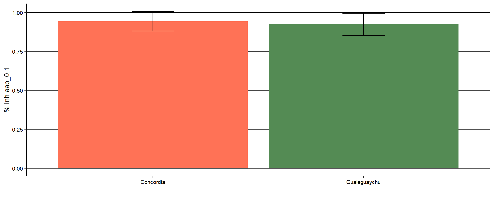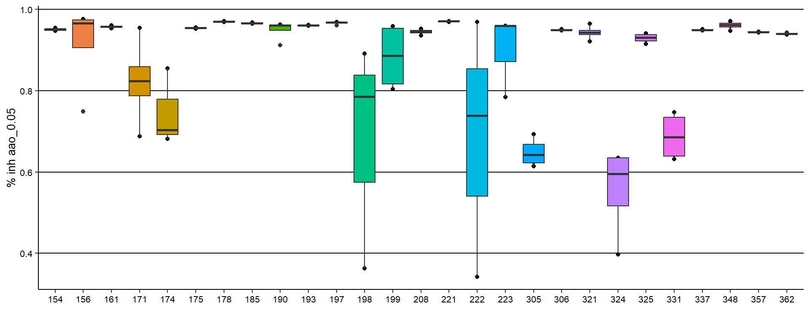
0.100
Tabla descriptiva por población
## # A tibble: 2 × 6
## site n Mean min max sd
## <fct> <int> <dbl> <dbl> <dbl> <dbl>
## 1 Concordia 63 0.944 0.603 0.977 0.0625
## 2 Gualeguaychu 38 0.923 0.561 0.966 0.0710Gráfico por población
Tabla descriptiva por fenotipo
## # A tibble: 27 × 7
## # Groups: site [2]
## site phenotype n Mean min max sd
## <fct> <fct> <int> <dbl> <dbl> <dbl> <dbl>
## 1 Concordia 154 4 0.953 0.951 0.956 0.00249
## 2 Concordia 156 4 0.934 0.823 0.977 0.0744
## 3 Concordia 161 4 0.957 0.954 0.961 0.00312
## 4 Concordia 171 4 0.944 0.911 0.958 0.0222
## 5 Concordia 174 3 0.944 0.940 0.951 0.00650
## 6 Concordia 175 4 0.954 0.952 0.956 0.00145
## 7 Concordia 178 4 0.970 0.969 0.971 0.000801
## 8 Concordia 185 3 0.962 0.960 0.964 0.00182
## 9 Concordia 190 4 0.962 0.961 0.963 0.000858
## 10 Concordia 193 4 0.961 0.960 0.962 0.00106
## # ℹ 17 more rowsGráficos por fenotipo
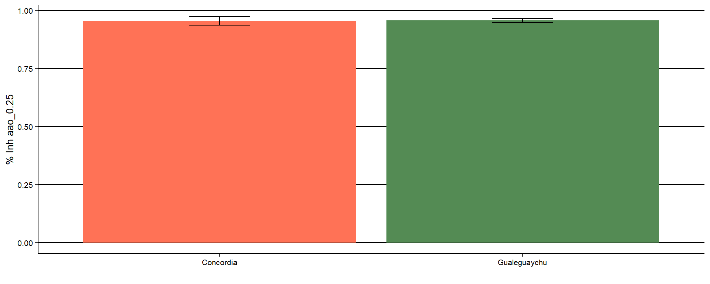
0.250
####Tabla descriptiva por población
## # A tibble: 2 × 6
## site n Mean min max sd
## <fct> <int> <dbl> <dbl> <dbl> <dbl>
## 1 Concordia 63 0.954 0.827 0.974 0.0184
## 2 Gualeguaychu 38 0.956 0.940 0.973 0.00901Gráfico por población
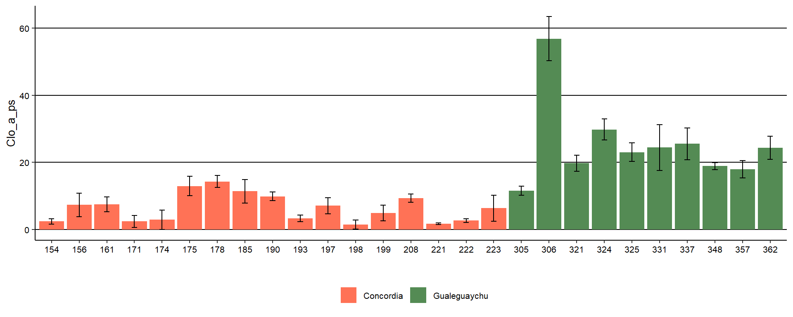
Tabla descriptiva por fenotipo
## # A tibble: 27 × 7
## # Groups: site [2]
## site phenotype n Mean min max sd
## <fct> <fct> <int> <dbl> <dbl> <dbl> <dbl>
## 1 Concordia 154 4 0.953 0.951 0.956 0.00249
## 2 Concordia 156 4 0.930 0.827 0.967 0.0692
## 3 Concordia 161 4 0.953 0.949 0.959 0.00417
## 4 Concordia 171 4 0.956 0.952 0.958 0.00280
## 5 Concordia 174 3 0.951 0.940 0.962 0.0112
## 6 Concordia 175 4 0.950 0.949 0.951 0.000922
## 7 Concordia 178 4 0.957 0.956 0.958 0.00113
## 8 Concordia 185 3 0.949 0.946 0.952 0.00277
## 9 Concordia 190 4 0.961 0.961 0.961 0.000429
## 10 Concordia 193 4 0.960 0.958 0.961 0.00145
## # ℹ 17 more rowsGráficos por fenotipo
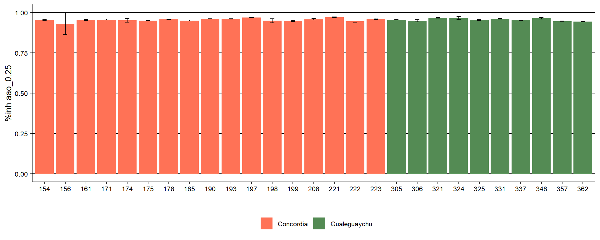
Clorofila a
Tabla descriptiva por población
## # A tibble: 2 × 6
## site n Mean min max sd
## <fct> <int> <dbl> <dbl> <dbl> <dbl>
## 1 Concordia 63 6.42 0.386 16.3 4.50
## 2 Gualeguaychu 37 25.8 10.2 62.8 12.5Gráfico por población

Tabla resumen por fenotipo
## # A tibble: 27 × 7
## # Groups: site [2]
## site phenotype n Mean min max sd
## <fct> <fct> <int> <dbl> <dbl> <dbl> <dbl>
## 1 Concordia 154 4 2.36 1.38 3.22 0.798
## 2 Concordia 156 4 7.29 2.54 10.8 3.46
## 3 Concordia 161 4 7.51 5.35 10.3 2.22
## 4 Concordia 171 4 2.38 0.851 4.76 1.79
## 5 Concordia 174 3 2.86 0.688 6.18 2.92
## 6 Concordia 175 4 12.9 9.31 16.2 2.91
## 7 Concordia 178 4 14.3 12.3 16.3 1.74
## 8 Concordia 185 4 11.3 8.25 14.8 3.50
## 9 Concordia 190 4 9.85 8.08 10.8 1.29
## 10 Concordia 193 4 3.30 2.42 4.71 0.992
## # ℹ 17 more rowsGráfico resumen por fenotipo
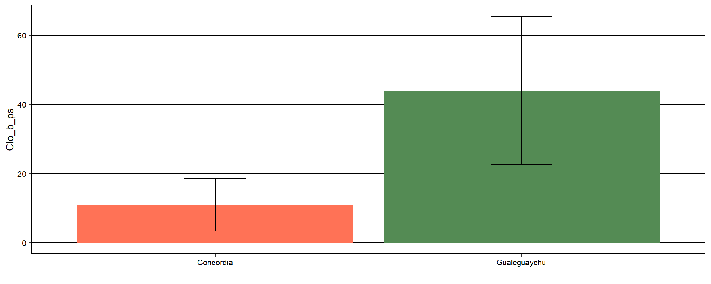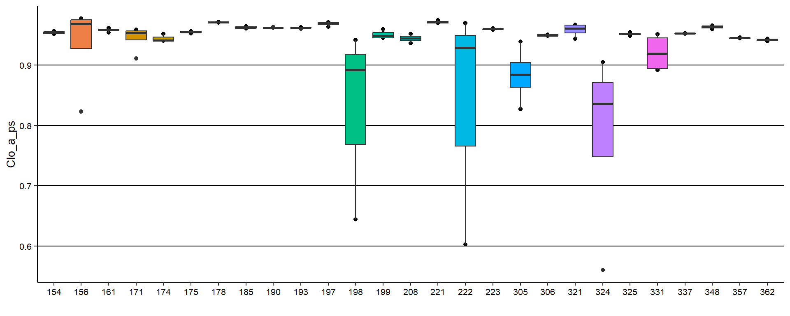
Clorofila b
Tabla descriptiva por población
## # A tibble: 2 × 6
## site n Mean min max sd
## <fct> <int> <dbl> <dbl> <dbl> <dbl>
## 1 Concordia 63 10.9 0.659 27.8 7.66
## 2 Gualeguaychu 37 44.0 17.4 107. 21.4Gráfico por población
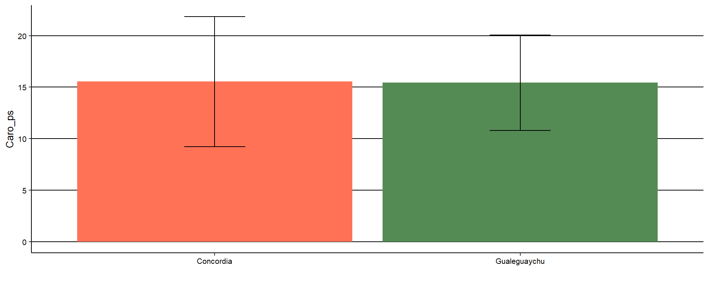
Tabla resumen por fenotipo
## # A tibble: 27 × 7
## # Groups: site [2]
## site phenotype n Mean min max sd
## <fct> <fct> <int> <dbl> <dbl> <dbl> <dbl>
## 1 Concordia 154 4 4.02 2.35 5.50 1.37
## 2 Concordia 156 4 12.1 4.24 17.6 5.63
## 3 Concordia 161 4 12.8 9.14 17.4 3.73
## 4 Concordia 171 4 3.93 1.46 7.66 2.84
## 5 Concordia 174 3 4.87 1.18 10.5 4.97
## 6 Concordia 175 4 22.1 15.9 27.7 4.97
## 7 Concordia 178 4 24.4 21.1 27.8 2.96
## 8 Concordia 185 4 19.3 14.1 25.1 5.97
## 9 Concordia 190 4 16.8 13.8 18.5 2.20
## 10 Concordia 193 4 5.62 4.12 8.04 1.70
## # ℹ 17 more rowsGráfico resumen por fenotipo
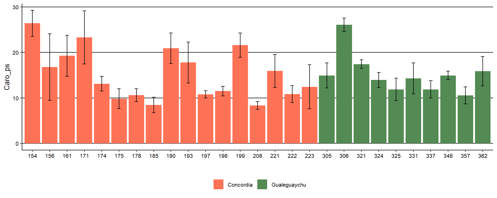
Carotenoides
Tabla descriptiva por población
## # A tibble: 2 × 6
## site n Mean min max sd
## <fct> <int> <dbl> <dbl> <dbl> <dbl>
## 1 Concordia 63 15.5 6.59 29.3 6.32
## 2 Gualeguaychu 37 15.4 9.08 27.7 4.64Gráfico por población

Tabla de carotenoides
## # A tibble: 27 × 7
## # Groups: site [2]
## site phenotype n Mean min max sd
## <fct> <fct> <int> <dbl> <dbl> <dbl> <dbl>
## 1 Concordia 154 4 26.4 22.7 29.3 2.86
## 2 Concordia 156 4 16.8 9.14 26.0 7.32
## 3 Concordia 161 4 19.3 13.3 24.1 4.49
## 4 Concordia 171 4 23.3 15.7 28.8 5.85
## 5 Concordia 174 3 13.1 11.3 14.5 1.62
## 6 Concordia 175 4 9.83 7.33 12.2 2.20
## 7 Concordia 178 4 10.6 9.03 12.4 1.42
## 8 Concordia 185 4 8.45 6.59 9.96 1.71
## 9 Concordia 190 4 20.9 17.4 25.2 3.35
## 10 Concordia 193 4 17.8 13.2 23.8 4.50
## # ℹ 17 more rowsGráfico de carotenoides


Acidez Total Titulable (ATT)
## # A tibble: 2 × 6
## site n Mean min max sd
## <fct> <int> <dbl> <dbl> <dbl> <dbl>
## 1 Concordia 29 1.41 0.29 2.59 0.678
## 2 Gualeguaychu 15 0.353 0.15 0.88 0.235Gráfico por población

Tabla descriptiva
## # A tibble: 27 × 7
## # Groups: site [2]
## site phenotype n Mean min max sd
## <fct> <fct> <int> <dbl> <dbl> <dbl> <dbl>
## 1 Concordia 154 1 1.37 1.37 1.37 NA
## 2 Concordia 156 1 0.79 0.79 0.79 NA
## 3 Concordia 161 1 1.48 1.48 1.48 NA
## 4 Concordia 171 4 2.25 1.84 2.59 0.345
## 5 Concordia 174 3 1.98 1.85 2.23 0.217
## 6 Concordia 175 1 0.76 0.76 0.76 NA
## 7 Concordia 178 1 0.52 0.52 0.52 NA
## 8 Concordia 185 1 0.73 0.73 0.73 NA
## 9 Concordia 190 1 0.96 0.96 0.96 NA
## 10 Concordia 193 1 1.74 1.74 1.74 NA
## # ℹ 17 more rowsGráfico por fenotipo

Sólidos solubles
Tabla descriptiva
## # A tibble: 2 × 6
## site n Mean min max sd
## <fct> <int> <dbl> <dbl> <dbl> <dbl>
## 1 Concordia 29 9.58 5.9 13.1 2.15
## 2 Gualeguaychu 15 6.69 5.3 9.3 1.21Gráfico por población

Tabla descriptiva
## # A tibble: 27 × 7
## # Groups: site [2]
## site phenotype n Mean min max sd
## <fct> <fct> <int> <dbl> <dbl> <dbl> <dbl>
## 1 Concordia 154 1 8.3 8.3 8.3 NA
## 2 Concordia 156 1 8.2 8.2 8.2 NA
## 3 Concordia 161 1 8.3 8.3 8.3 NA
## 4 Concordia 171 4 11.1 10.1 11.9 0.75
## 5 Concordia 174 3 10.4 9.7 11.3 0.833
## 6 Concordia 175 1 13.1 13.1 13.1 NA
## 7 Concordia 178 1 13 13 13 NA
## 8 Concordia 185 1 12.1 12.1 12.1 NA
## 9 Concordia 190 1 10.9 10.9 10.9 NA
## 10 Concordia 193 1 8.4 8.4 8.4 NA
## # ℹ 17 more rowsGráfico por fenotipo
Relación ATT y SS


Análisis de CCI
Resumen del modelo
Supuestos del modelo
Test de normalidad para muestras biológicas (frutos)
Test de normalidad para genotipos
Conclusiones
ICC del modelo
- —-> %
- —-> %
- —-> %
ICC del modelo =